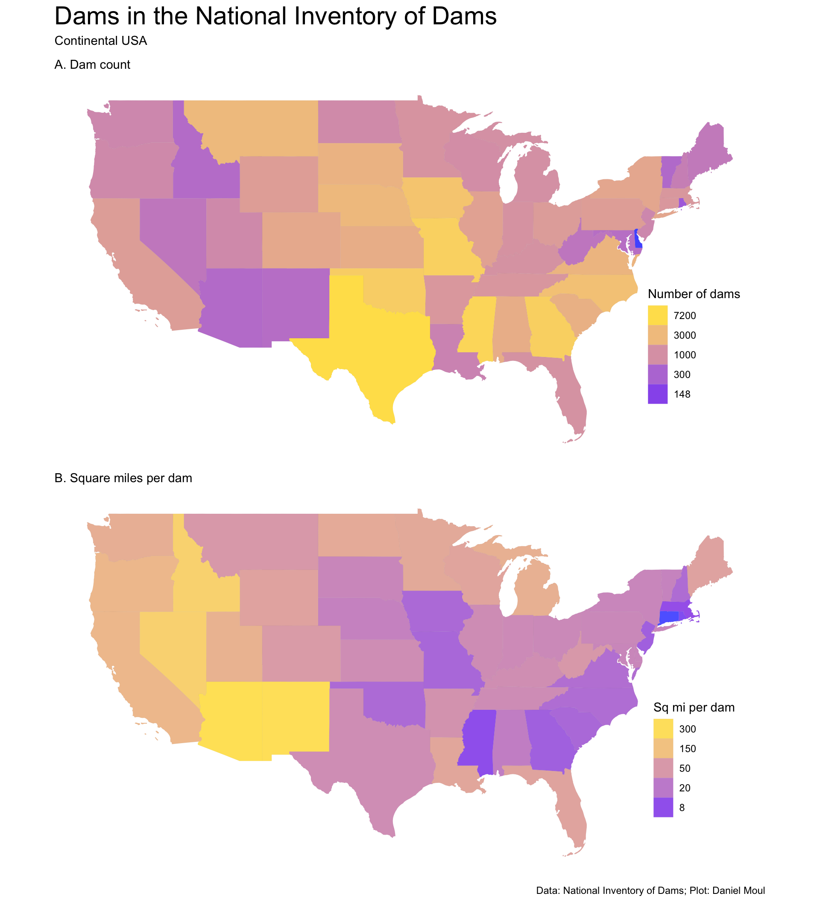
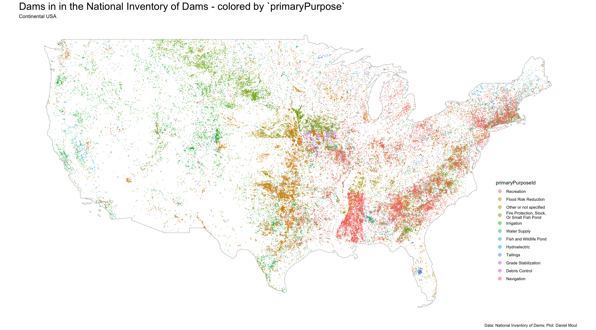
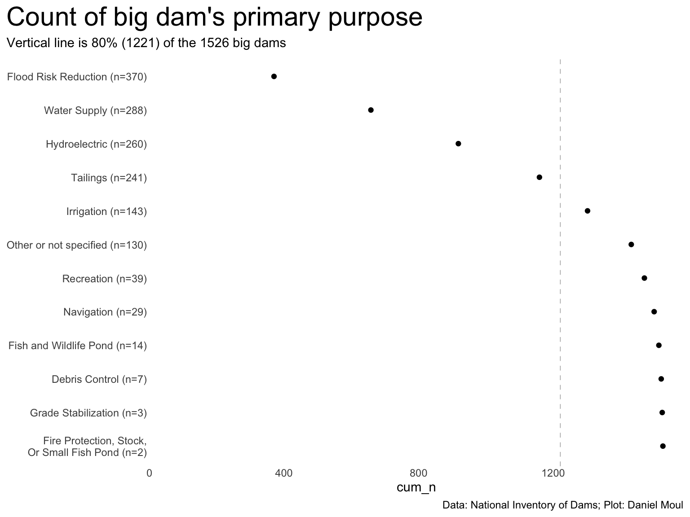

Let’s start with two choropleth maps: Figure 5.1 shows number of dams and square miles per dam in each state. It’s a plot of 86,351 dams in the National Inventory of Dams (NID) in the continental USA.
Show the code
dta_for_plot <- state_boundaries_sf |>left_join(dams_by_state |>st_drop_geometry(),by =join_by(state_abb)) |># Should I include water as well as land in the state area calc below? As long as I'm consistent either is OK.mutate(state_area_mi2 = (aland + awater) /2589988.110336, # convert from m^2 to mi^2dams_per_mi2 = n / state_area_mi2,mi2_per_dam = state_area_mi2 / n )dta_for_plot |>st_drop_geometry() |>arrange(desc(n)) |>head(5) |>select(state_abb, n) |>gt() |>tab_header(md("**States with the most dams**"))
States with the most dams
state_abb
n
TX
7279
MS
6088
MO
5378
GA
5356
OK
4970
States with the fewest dams are small (NJ, RI, VT) or very dry (ID, AZ, NM). States with the most dams are wet, large and/or had a compelling need for flood control (MS, GA, TX, MO).
The states with the fewest square miles per dam come from New England states (CT, RI, MA) and (because there are so many dams: MS). The dry states in the west (ID, NV, AZ, NM) have the most square miles per dam:
Show the code
p1 <- dta_for_plot |>ggplot() +geom_sf(aes(fill = n),size =0.01,color ="grey50",alpha =0.75) +scale_fill_gradient(trans ="log",low ="blue",high ="gold",breaks =c(148, 300, 1000, 3000, 7200) # set manual breaks to get "clean" numbers ) +guides(fill =guide_legend(reverse =TRUE,position ="inside")) +theme(axis.text =element_blank(),axis.ticks =element_blank(),axis.title =element_blank(),legend.position.inside =c(0.9, 0.3)) +labs(subtitle ="A. Dam count",fill ="Number of dams" )p2 <- dta_for_plot |>ggplot() +geom_sf(aes(fill = mi2_per_dam),size =0.01,color ="grey50",alpha =0.7) +scale_fill_gradient(trans ="log",low ="blue",high ="gold",breaks =c(8, 20, 50, 150, 300) # set manual breaks to get "clean" numbers ) +guides(fill =guide_legend(reverse =TRUE,position ="inside")) +theme(axis.text =element_blank(),axis.ticks =element_blank(),axis.title =element_blank(),legend.position.inside =c(0.9, 0.3)) +labs(subtitle ="B. Square miles per dam",fill ="Sq mi per dam" )p1 / p2 +plot_annotation(title ="Dams in the National Inventory of Dams",subtitle ="Continental USA",caption = my_caption )

Figure 5.1: Maps of dams in the continental states colored by number of dams and square miles per dam in each state
Plotting dam locations colored by purpose in Figure 5.2, even without showing state state borders, we can see some regional and state differences1:
A north-south swath of dams in Texas and further north for flood protection
A paucity of dams in the NID in Kansas, with a much higher density of dams just north of the border in Nebraska
A cluster of dams for grade stabilization in northern Missouri and southern Iowa
A high density of recreational dams in Mississippi
Dams for hydroelectric generation clustered in the northeast with clusters above the fall line in the Mid- and South-Atlantic states, in the Sierras, and in Wisconsin and Michigan.
Show the code
ggplot() +geom_sf(data = continental_us_border, # state_boundaries_sf, fill =NA,color ="grey50") +geom_sf(data = dams |>mutate(n_primaryPurposeId =n(),.by = primaryPurposeId) |>mutate(primaryPurposeId =fct_reorder(primaryPurposeId, -n_primaryPurposeId)),aes(color = primaryPurposeId),size =0.01,alpha =0.5) +guides(color =guide_legend(override.aes =list(size =3),position ="inside")) +theme(axis.text =element_blank(),axis.ticks =element_blank(),axis.title =element_blank(),legend.position.inside =c(0.9, 0.3)) +labs(title ="Dams in in the National Inventory of Dams - colored by `primaryPurpose`",subtitle ="Continental USA",caption = my_caption )

Figure 5.2: Map of dams in the continental states colored by primaryPurpose
Figure 5.3 makes the clusters by region and state easier to see.
Most of the big dams (Figure 5.8) are primarily for flood risk reduction, water supply, hydroelectric power, and to hold mine tailings.
Show the code
dta_for_plot2 <- dta_for_plot |>distinct(primaryPurposeId_label, n_primaryPurposeId)n_dams <-sum(dta_for_plot2$n_primaryPurposeId)pct80 <-round(n_dams *0.8)dta_for_plot2 |>arrange(desc(n_primaryPurposeId)) |>mutate(primaryPurposeId_label =fct_reorder(primaryPurposeId_label, n_primaryPurposeId),cum_n =cumsum(n_primaryPurposeId)) |>ggplot(aes(cum_n, primaryPurposeId_label, group = cum_n)) +# geom_line() +geom_vline(xintercept = pct80,lty =2, linewidth =0.2, alpha =0.5) +geom_point() +scale_x_continuous(expand =expansion(mult =c(0, 0.04))) +expand_limits(x =0) +theme(plot.title.position ="plot") +labs(title ="Count of big dam's primary purpose",subtitle =glue("Vertical line is 80% ({pct80}) of the {n_dams} big dams"),y =NULL,caption = my_caption )

Figure 5.8: Map of big dams in the continental USA
There are more insights to be gleaned by looking at other numerical distributions and summaries. That’s the focus of the next chapter.
Some differences may be due to differences in state-level policies related to data collection than to the number of dams; others may be due to geographical differences, since it was common to put borders where the geography changes.↩︎